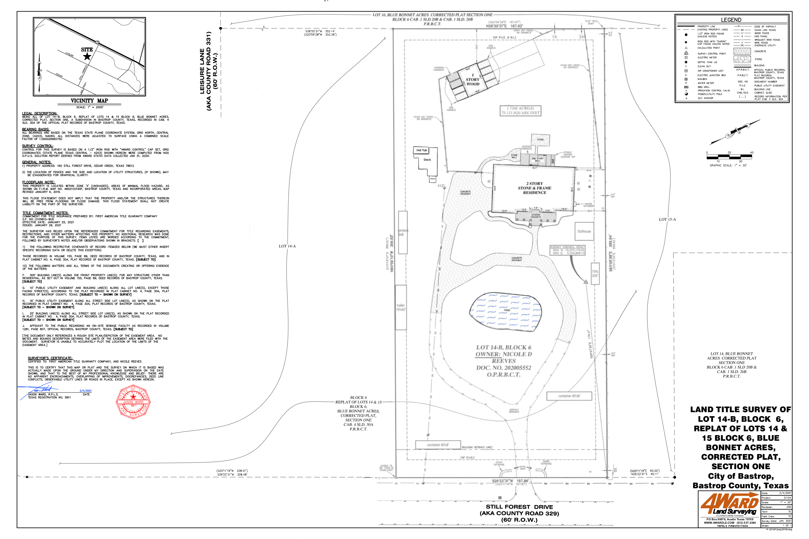

Cedar Creek, TX 78612 • PID 44401 • Lot 14-B, Block 6, Blue Bonnet Acres • 1.7348 Ac (75,133 SF) • ONE ROAD FRONTAGE (Still Forest Dr) • NOT TO SCALE • March 2026

Edit distances below to check compliance. ONE ROAD FRONTAGE: South (Still Forest Dr / CR 329 — Local Rural Road). West boundary adjoins neighboring property.
Bastrop County Subdivision Regulations — setback by road classification:
Local Rural Road: 20' from property line • Ranch Road: 15' • Collector: 25' • Arterial: 30'
Lodging/RV Regs Section IV.8 (lodging units only): 25' from ROW • 10' from property line • 10' from internal road • 20' between units
Containers (40'×8' = 320 SF): Exceed the 25 SF exemption limit in unincorporated county — classified as permanent structures. Subject to all setbacks, require Development Permit, and must be positioned behind the primary building.
P.U.E.: 10' Public Utility Easement on east side (per survey) — no permanent structures allowed in easement.
South side uses 20' (Local Rural Road). West/north/east sides use 10' (property line, per County Development Services). East side also has 10' P.U.E.
All distances from the survey plat by 4Ward Land Surveying (2/4/2021).
| Structure | Distance (ft) | Side | Required (ft) | Deficit | Status |
|---|
Property fronts on Still Forest Dr (CR 329) to the south — classified as a Local Rural Road. Per Bastrop County Subdivision Regulations: 20' setback from property line on road frontage. West boundary adjoins a neighboring property (Leisure Lane is further west). West, east, and north sides: 10' property line setback. East side also has a 10' P.U.E. per survey.
Big Trailer (9' short), Small Trailer (~3' short), 3 containers on W side (5–8' short of 10' property line setback), and Beige Container on S side (14' short of 20' Local Rural Road setback). Bathroom building meets the 10' setback but was built without a permit.
Each 40'×8' container = 320 SF, exceeding the 25 SF exemption for unincorporated Bastrop County. Legally classified as permanent structures — subject to all setbacks, require Development Permit, must be behind the primary building, and if visible from public road need screening (6' fence or landscaping). Fire Marshal may require 10–30' separation from main building. Each adds 320 SF impervious cover.
ESD: BCESD #3 (Bastrop County Emergency Services District #3)
Flood Zone: Zone X (unshaded) — NOT in 100-year floodplain
Houston Toad: NOT in habitat area — no LPHCP Declination needed
Septic: Aerobic system (JET INC), Larry's Septic (512-695-6570).
Water: Active meter at front gate.
Electric: Digital meter + sub-panels, power pole w/ transformer.
Gas: Not observed.
North: 187.92' (N26°20'31"E)
East: 399.94' (S63°58'38"E) — 10' P.U.E. & B.L.
SE Jog: 60.00' (N20°11'19"E)
South: ~188' along Still Forest Dr
West: 328.51' (S20°17'19"W) — adjoining property (Leisure Lane beyond)
Full survey plat by 4Ward Land Surveying (Feb 4, 2021, Jason Ward R.P.L.S. #5811). All structures, distances to property lines, driveway, pond, and bearings are drawn by the surveyor.